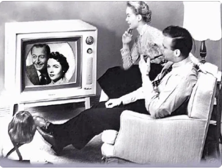
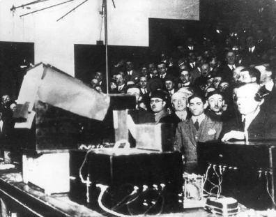
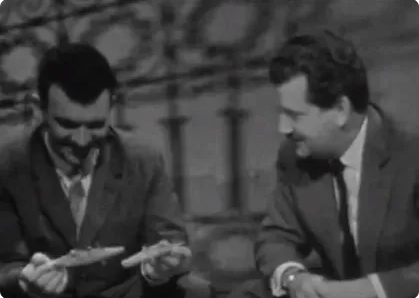
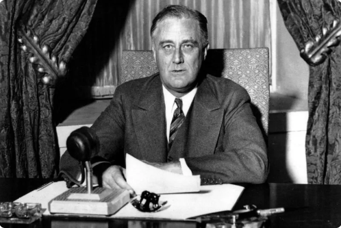
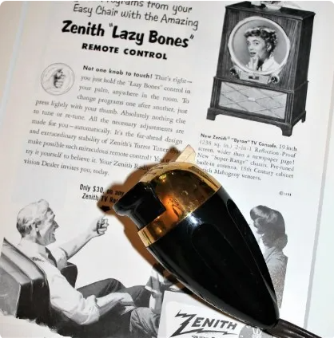
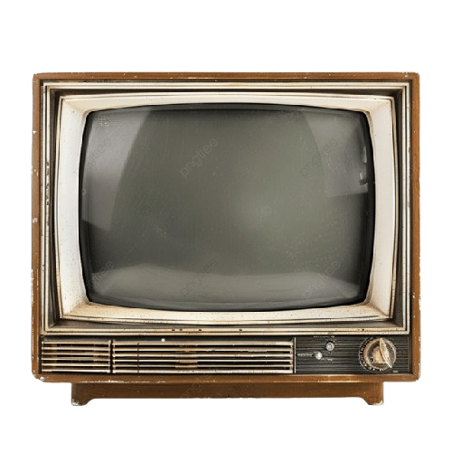
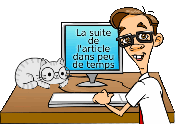

Publié le 14 février 2026

Sur un écran apparaît une marionnette, puis le visage déformé mais reconnaissable d’un homme situé dans la pièce d’à côté.
Cette démonstration du « téléviseur », à Londres, le 26 janvier 1926, est l’œuvre de John Logie Baird,
un Écossais qui réussit ce qui est considéré par beaucoup comme la première émission de télévision.
Un succès que l’histoire a pourtant relégué au second plan au profit de la présentation spectaculaire de l’ingénieur français
René Barthélemy. En 1931, soit cinq ans après son congénère, il réunit 800 personnes dans un amphithéâtre
à la limite entre Paris et Malakoff pour assister à un moment d’histoire.
Sa secrétaire Suzanne Bridoux se met à parler, en direct, sur l’écran de la salle de spectacle,
alors qu’elle se trouve physiquement devant la tour Eiffel.

Un concours d’orthographe dans lequel il faut épeler des mots.
C’est le concept simple mais efficace de l’émission « Spelling Bee », dont la première édition est diffusée au Royaume-Uni, le 31 mai 1938.
Pensé à l’origine comme un programme télé et radio, le show de 15 à 30 minutes ne connaît finalement que quatre épisodes sur petit écran, le dernier diffusé le 1er septembre de la même année.
En France, il faut attendre le 25 octobre 1954 pour que « Télé Match » fasse son apparition sur RTF Télévision.
L’émission présentée par Pierre Bellemare et Roger Couderc pose ses questions de culture générale aux spectateurs jusqu’en juin 1961.

C’est à l’occasion de l’inauguration de l’Exposition universelle de 1939 que le président américain d’alors, Franklin Roosevelt, apparaît à la télévision,
devenant ainsi le premier chef d’État présent sur le petit écran.
Ce rendez-vous est pensé comme un véritable événement publicitaire pour les sociétés RCA et NBC qui cherchent à implanter l’appareil dans les ménages américains.
Au début des années 1940 le pays ne compte en effet que quelques centaines de téléviseurs.

Trouver un système pour « faire taire ces ennuyeuses publicités », c’est ce que le président de la société américaine Zenith Electronics demande à ses ingénieurs,
de peur que la télévision ne pâtisse de la présence continue des publicités à l’écran. C’est ainsi que naît la première télécommande, la « Lazy Bones », soit « la paresseuse »,
en 1950. Cette sorte de grosse poire noire et dorée est composée de deux boutons qui permettent de changer de chaîne à distance. Seul point faible : le long fil par lequel elle est connectée au téléviseur.
Un autre modèle emblématique de Zenith apparaît cinq ans plus tard.
Il s’agit d’une télécommande à rayon lumineux qui a toutefois l’inconvénient d’être tellement sensible au soleil qu’elle se déclenche toute seule, éteignant l’écran sans prévenir.

Le nombre de spectateurs qui regardent l’événement en direct, en différé ou retransmis au cinéma, est estimé à 277 millions.
Le couronnement d’Elizabeth II du 2 juin 1953 à l’abbaye de Westminster est le premier événement majeur à être diffusé en « mondovision ».
Au total, cinq pays d’Europe assistent en direct à ce moment d’histoire : le Royaume-Uni, la France, les Pays-Bas, le Danemark et la RFA.
Les bobines de films sont également transportées en avion vers les États-Unis, le Canada ou encore l’Australie, ce qui permet de mondialiser encore un peu plus le couronnement.


@fred
https://fred-hub159.github.io/pourquejemesouvienne
Les commentaires sont soumis à modération et doivent être approuvés avant publication.